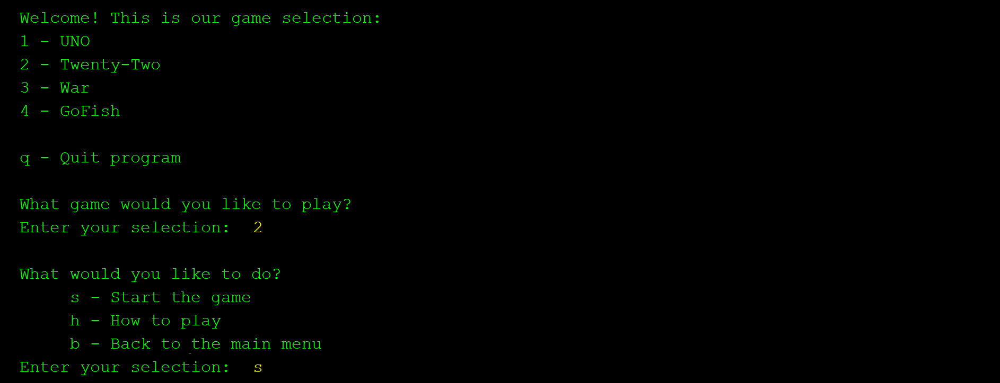

Class: CSCI 301 - Survey of Scripting Languages
Grade: 100/100
Language(s): Python
The Twenty-Two Game is part of a team project developed in Java that simulates a card game based on the card game Blackjack. The objective of the project was to create an interactive command-line application where players can engage in the game, and the system ensures a smooth gameplay experience through error handling, game logic, and input validation. As part of a larger team project, I specifically developed the Twenty-Two game module, which involves managing the deck of cards, controlling game flow, and implementing user interaction.
The game allows players to make card choices, calculate the value of their hand, and decide whether to draw more cards or stop. Key features include automatic input validation to prevent invalid moves, a clear flow from starting the game to handling the user's action (such as drawing cards), and checking for win conditions when the player's score reaches 22 or higher. The program is designed to loop, allowing the user to replay the game or return to the main menu. When an invalid input is detected, the program prompts the user until a valid response is entered.
Fig. 1 shows a screenshot of the game menu, where the user can choose to start the game, view instructions, or exit. In Fig. 2, the game handles invalid input, waiting for the user to enter a valid selection. This demonstrates the attention to detail in ensuring a seamless user experience through error handling and intuitive interaction. The Twenty-Two game is an excellent showcase of my skills in game development, user input management, and team collaboration.
In Apache NetBeans, navigate to Run > Build Project. Click on the Run button in the toolbar. The program will execute, and any outputs will appear in the Output window of NetBeans.
A successful run displays a menu of card games, allowing players to select and interact with each game through command-line prompts. The program handles inputs dynamically, ensuring smooth gameplay and clear feedback.
To access the project's source code, please request access via email. Upon approval, a link to the GitHub repository will be provided. Explore the code to see the project's full functionality.
Access Repository